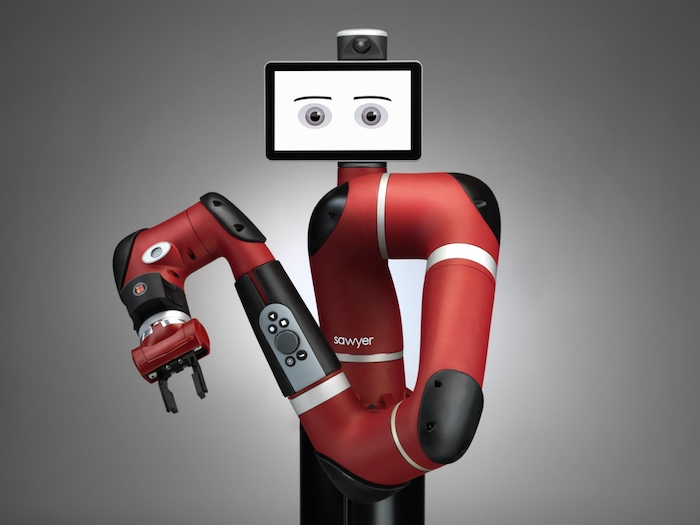
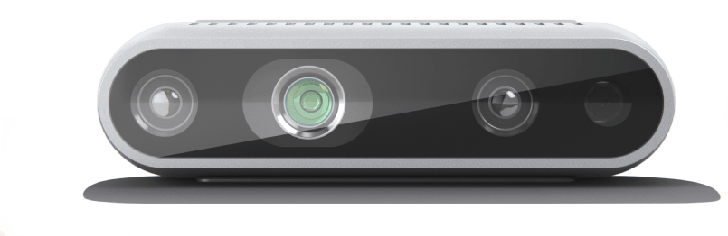
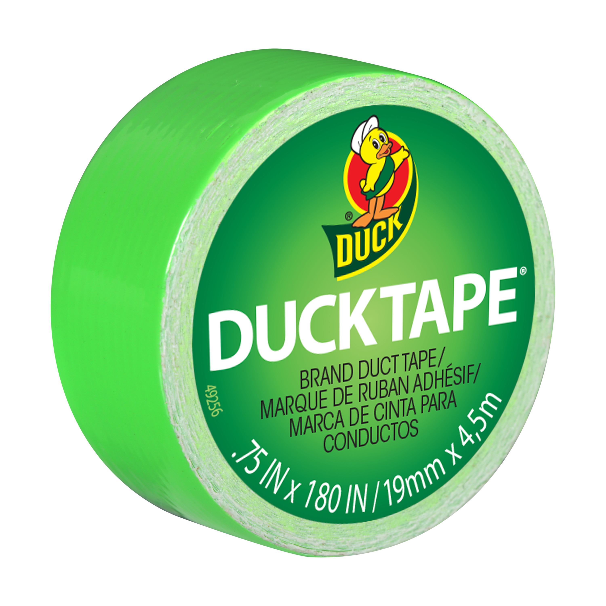

Implementation
Hardware Used and Built

Parts Used
Software Stack
The software stack for this project can be divided into three stages: ball detection (tracking), trajectory prediction, and sawyer actuation (inverse kinematics). We have 4 main files that correspond to each of these steps:
Sawyeet/src/sawyeet/src/:
- tracking_utils.py
- tracker_3d.py
- prediction.py
Sawyeet/src/ik/src/:
- hardcoded.py
tracking_utils.py: This is a helper file for tracker_3d.py and contains the Hue-Saturation-Value (HSV) range information for many colors and two functions. One of these functions receives a frame and checks each pixel to see if it is within the range of the given color. This function returns a grayscale mask of the frame, where the white patches of the mask denote the pixels where the color in the original image matches our requirement (neon-green color range). The other function receives the grayscale mask to find the largest contour, ignoring any smaller patches (noise), and then gets the smallest enclosing circle in that contour. The pixel locations of the points enclosed in that circle are averaged out marking the “center” of the detected ball.
tracker_3d.py: This ROS node subscribes to 3 ROS topics from the RealSense Package: the aligned depth, the color image, and the camera information. It then synchronises each of the topics and creates a callback for the synchronized topics. For each input frame that it receives from the RealSense, it uses the helper functions from the tracking_utils.py file to get the centroid of the ball. Then it uses the aligned depth frame to get the average depth (along the z-axis) at that centroid. It then uses the camera matrix to convert this information into world 3-D coordinates and publishes this information using the geometry_msgs/Point message type.
prediction.py: This ROS node subscribes to the 3-D world coordinates published by tracker_3d.py and needs to be launched just before the user is ready to throw the ball. Once launched, every time the node receives the 3-D coordinates of the detected ball, it performs a state-estimation using a Kalman Filter. Once the ball leaves the frame, it predicts the location that the ball would intersect with the Z-Plane using the estimated state data and publishes the predicted location as a geometry_msgs/PoseStamped message. The final predicted location of the ball is a 3-D real-world coordinate at a fixed distance (along the Z-Axis/Plane of the RealSense Camera) from the Sawyer.
hardcoded.py: This ROS node subscribes to a geometry_msgs/PoseStamped message published by the prediction node, and performs a lookup for the end-effector position that is closest to the predicted location, in a dictionary (generated offline) that maps from end effector positions to joint angles. It then uses these joint angles and moves the arm to the desired location.
How Does it Work?
Our system starts by detecting the ball in the camera frame using color segmentation. Each input frame from the RealSense is converted from RGB to the Hue-Saturation-Value (HSV) color space. Based on the color of the ball, a suitable range of HSV values are picked. We had to tune these values each day for testing due to varying brightness levels in the lab based on the time of day. Only the pixels in the frame that fall in this range are selected, as they correspond to the color of the ball. We then find a contour or an outline of each of the regions that matched our requirements and neglect any other smaller regions by selecting the largest of these contours. Finally, we obtain the smallest enclosing circle for the largest contour and compute the centroid location (pixel location) of the detected ball.
To calculate the depth of the ball, we receive a sensors_msgs/Image message from the RealSense package which contains the depth values of each pixel aligned with the RGB image. We average the depth values for a small region of points around the center of the ball that are present in the grayscale mask. While the algorithm does flag some false-positives, the only cases we observed false-positives were when there was another green object directly behind the ball at a different distance. Using the average depth and the camera matrix obtained from the RealSense package, we compute the 3-D world coordinate of the detected ball that obeys the following equation:
3d_point = depth * 0.001 * (camera_matrix-1 · homog_point_pixel)
After the above-mentioned algorithm locates the ball, we use the 3-D position of the ball as an input to predict the trajectory that the ball will follow. The prediction node uses a simplified version of a Kalman Filter to estimate the state of the ball (positions and velocities in X, Y, and Z axes), while averaging out any inconsistencies in the previous measurements. We used Newton's laws of motion in the prediction step of our Kalman Filter, and incorporated tunable “weights” to compute the weighted sum of the measurements and predictions in the update-step (for both positions and velocities along each axis).
The Kalman Filter continuously updates the estimated state of the ball till it leaves the frame, after which the prediction node uses the latest estimated velocities and positions along with the ballistic trajectory equation to predict the trajectory of the ball. It then computes the intersection of the trajectory of the ball with the vertical plane (Z-Plane of the camera and the X-Plane of the Sawyer) at a fixed distance of 0.7 meters ahead of the Sawyer (about 2 m behind the Sawyer). After experimentally tuning the weights in our Kalman Filter, we were able to predict the location of the ball at the required location with 15 cm margin of error for all types of throws. For our prediction algorithm to be accurate, we needed to capture at least 4 different positions of the ball after the ball starts executing a projectile motion. We also created a visualization tool to track the position of the ball in real-time and also sketched out the predicted location of the ball. We then transform the predicted location of the ball into the frame of reference of the Sawyer and publish this information in the form of a geometry_msgs/PoseStamped message.
Finally, we need to actuate the joints of the Sawyer such that the end-effector of the arm moves to the predicted location. We tried different methods of calculating the joint angles for the precise desired end-effector position, but each of the IK methods we used were too slow, or failed often. The path planning itself was also too slow as it would sometimes result in roundabout paths for small changes in the end-effector positions. To solve this problem and improve the speed of the motion, we decided to create a grid in 3-D space which consisted of a group of spaced out points in the X-Plane in the Sawyer’s reference frame (Z-Plane in RealSense’s reference frame). For each block in the grid, we measured the end effector position and the joint angles, and created a dictionary/hashmap between these values. Using this method, we reduced the complexity of our algorithm which could calculate the closest recorded (using a hashmap) end-effector point to the predicted ball position in the same plane, and lookup the required joint angles for the same. Additionally, since we were directly controlling the joint angles, our algorithm along with the actuation speed of the Sawyer were much faster than the IK and Path Planning based methods.

Figure 1: Sawyer Robot
There are 2 main hardware components in our project. The first one is the Sawyer robot (Figure 1) from the lab which is a 7-DOF manipulator, with only rotational joints, and one arm.

Figure 2: Intel realsense D435i
The second one is the RealSense D435i (Figure 2). The camera has a max resolution of 1280x720 for the depth camera and 1920x1080 for the rgb image. The max fps is 90 FPS for the depth and 30 FPS for the RGB camera at 640x480 resolution. The FOV of the camera is very small at 87°x 58°.
Figure 3: Balloon with duct tape
The final piece of hardware was the “ball” (Figure 3), which we constructed using a balloon and duct tape. The tennis ball that we tested worked well when held, but due to its high speed when thrown, the prediction node failed sometimes as it was not able to capture enough frames of the position of the ball in order to accurately predict its trajectory. So, we used a partially inflated balloon (to about 40% capacity), and wrapped it with a few rounds of neon green colored duct tape, ensuring that it could still travel at slower speeds than a tennis ball. The tape not only improved segmentation and position tracking, but also made the balloon heavier enabling the balloon to follow a parabolic path instead of an unpredictable path.
Parts Used

Figure 4: Neon green duct tape
For the design of our “ball”, we used a partially inflated balloon with neon-colored duct tape wrapped around it to increase its weight, making it slow enough that the prediction node could estimate the state of the balloon and heavy enough for the balloon to reach the sawyer in a parabolic trajectory similar to a projectile.
Software Stack
The software stack for this project can be divided into three stages: ball detection (tracking), trajectory prediction, and sawyer actuation (inverse kinematics). We have 4 main files that correspond to each of these steps:
Sawyeet/src/sawyeet/src/:
- tracking_utils.py
- tracker_3d.py
- prediction.py
Sawyeet/src/ik/src/:
- hardcoded.py
tracking_utils.py: This is a helper file for tracker_3d.py and contains the Hue-Saturation-Value (HSV) range information for many colors and two functions. One of these functions receives a frame and checks each pixel to see if it is within the range of the given color. This function returns a grayscale mask of the frame, where the white patches of the mask denote the pixels where the color in the original image matches our requirement (neon-green color range). The other function receives the grayscale mask to find the largest contour, ignoring any smaller patches (noise), and then gets the smallest enclosing circle in that contour. The pixel locations of the points enclosed in that circle are averaged out marking the “center” of the detected ball.
tracker_3d.py: This ROS node subscribes to 3 ROS topics from the RealSense Package: the aligned depth, the color image, and the camera information. It then synchronises each of the topics and creates a callback for the synchronized topics. For each input frame that it receives from the RealSense, it uses the helper functions from the tracking_utils.py file to get the centroid of the ball. Then it uses the aligned depth frame to get the average depth (along the z-axis) at that centroid. It then uses the camera matrix to convert this information into world 3-D coordinates and publishes this information using the geometry_msgs/Point message type.
prediction.py: This ROS node subscribes to the 3-D world coordinates published by tracker_3d.py and needs to be launched just before the user is ready to throw the ball. Once launched, every time the node receives the 3-D coordinates of the detected ball, it performs a state-estimation using a Kalman Filter. Once the ball leaves the frame, it predicts the location that the ball would intersect with the Z-Plane using the estimated state data and publishes the predicted location as a geometry_msgs/PoseStamped message. The final predicted location of the ball is a 3-D real-world coordinate at a fixed distance (along the Z-Axis/Plane of the RealSense Camera) from the Sawyer.
hardcoded.py: This ROS node subscribes to a geometry_msgs/PoseStamped message published by the prediction node, and performs a lookup for the end-effector position that is closest to the predicted location, in a dictionary (generated offline) that maps from end effector positions to joint angles. It then uses these joint angles and moves the arm to the desired location.
How Does it Work?
Our system starts by detecting the ball in the camera frame using color segmentation. Each input frame from the RealSense is converted from RGB to the Hue-Saturation-Value (HSV) color space. Based on the color of the ball, a suitable range of HSV values are picked. We had to tune these values each day for testing due to varying brightness levels in the lab based on the time of day. Only the pixels in the frame that fall in this range are selected, as they correspond to the color of the ball. We then find a contour or an outline of each of the regions that matched our requirements and neglect any other smaller regions by selecting the largest of these contours. Finally, we obtain the smallest enclosing circle for the largest contour and compute the centroid location (pixel location) of the detected ball.
To calculate the depth of the ball, we receive a sensors_msgs/Image message from the RealSense package which contains the depth values of each pixel aligned with the RGB image. We average the depth values for a small region of points around the center of the ball that are present in the grayscale mask. While the algorithm does flag some false-positives, the only cases we observed false-positives were when there was another green object directly behind the ball at a different distance. Using the average depth and the camera matrix obtained from the RealSense package, we compute the 3-D world coordinate of the detected ball that obeys the following equation:
3d_point = depth * 0.001 * (camera_matrix-1 · homog_point_pixel)
After the above-mentioned algorithm locates the ball, we use the 3-D position of the ball as an input to predict the trajectory that the ball will follow. The prediction node uses a simplified version of a Kalman Filter to estimate the state of the ball (positions and velocities in X, Y, and Z axes), while averaging out any inconsistencies in the previous measurements. We used Newton's laws of motion in the prediction step of our Kalman Filter, and incorporated tunable “weights” to compute the weighted sum of the measurements and predictions in the update-step (for both positions and velocities along each axis).
The Kalman Filter continuously updates the estimated state of the ball till it leaves the frame, after which the prediction node uses the latest estimated velocities and positions along with the ballistic trajectory equation to predict the trajectory of the ball. It then computes the intersection of the trajectory of the ball with the vertical plane (Z-Plane of the camera and the X-Plane of the Sawyer) at a fixed distance of 0.7 meters ahead of the Sawyer (about 2 m behind the Sawyer). After experimentally tuning the weights in our Kalman Filter, we were able to predict the location of the ball at the required location with 15 cm margin of error for all types of throws. For our prediction algorithm to be accurate, we needed to capture at least 4 different positions of the ball after the ball starts executing a projectile motion. We also created a visualization tool to track the position of the ball in real-time and also sketched out the predicted location of the ball. We then transform the predicted location of the ball into the frame of reference of the Sawyer and publish this information in the form of a geometry_msgs/PoseStamped message.
Finally, we need to actuate the joints of the Sawyer such that the end-effector of the arm moves to the predicted location. We tried different methods of calculating the joint angles for the precise desired end-effector position, but each of the IK methods we used were too slow, or failed often. The path planning itself was also too slow as it would sometimes result in roundabout paths for small changes in the end-effector positions. To solve this problem and improve the speed of the motion, we decided to create a grid in 3-D space which consisted of a group of spaced out points in the X-Plane in the Sawyer’s reference frame (Z-Plane in RealSense’s reference frame). For each block in the grid, we measured the end effector position and the joint angles, and created a dictionary/hashmap between these values. Using this method, we reduced the complexity of our algorithm which could calculate the closest recorded (using a hashmap) end-effector point to the predicted ball position in the same plane, and lookup the required joint angles for the same. Additionally, since we were directly controlling the joint angles, our algorithm along with the actuation speed of the Sawyer were much faster than the IK and Path Planning based methods.